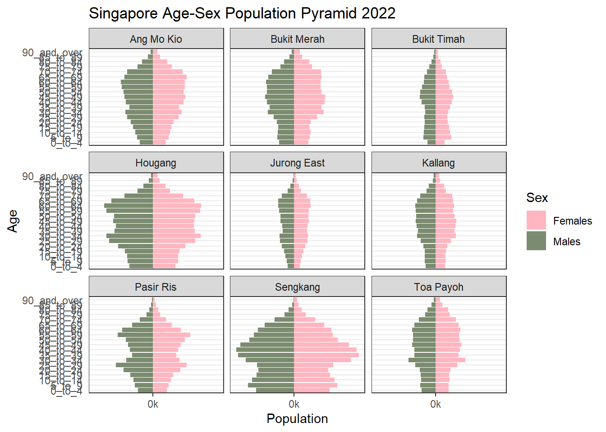

pacman::p_load(ggiraph,tidyverse,readxl)Take Home Exercise 02
Remaking peer's original design by improving chart's clarity and aesthetics and creating an alternative design if needed.
1. Overview
Installing and loading R packages
Two packages will be installed and loaded. They are : tidyverse and ggiraph.
Importing data
pop <- read_csv("data/respopagesextod2022.csv")Read the head data
head(pop)# A tibble: 6 × 7
PA SZ AG Sex TOD Pop Time
<chr> <chr> <chr> <chr> <chr> <dbl> <dbl>
1 Ang Mo Kio Ang Mo Kio Town Centre 0_to_4 Males HDB 1- and 2-Room … 0 2022
2 Ang Mo Kio Ang Mo Kio Town Centre 0_to_4 Males HDB 3-Room Flats 10 2022
3 Ang Mo Kio Ang Mo Kio Town Centre 0_to_4 Males HDB 4-Room Flats 10 2022
4 Ang Mo Kio Ang Mo Kio Town Centre 0_to_4 Males HDB 5-Room and Exe… 30 2022
5 Ang Mo Kio Ang Mo Kio Town Centre 0_to_4 Males HUDC Flats (exclud… 0 2022
6 Ang Mo Kio Ang Mo Kio Town Centre 0_to_4 Males Condominiums and O… 50 2022首先，我们将按性别和年龄计算新加坡总人口的频率计数。在下面的代码块中，dplyr包的group_by()用于按年龄和性别对订单进行分组。然后，使用dplyr的summarise ()来统计（即n()）居民的数量。
freq_pop <- pop %>%
group_by(`AG`, `Sex`,`PA`) %>%
summarise('Count'= sum(`Pop`)) %>%
ungroup()
head(freq_pop)# A tibble: 6 × 4
AG Sex PA Count
<chr> <chr> <chr> <dbl>
1 0_to_4 Females Ang Mo Kio 2480
2 0_to_4 Females Bedok 4970
3 0_to_4 Females Bishan 1320
4 0_to_4 Females Boon Lay 0
5 0_to_4 Females Bukit Batok 4400
6 0_to_4 Females Bukit Merah 2800排序数据表
默认情况下，tibble 数据框的值根据第一列的值排序。在这种情况下，值按年龄组的字母数字顺序排序。
因此，我们将根据原始数据集中分配的分类年龄组对数据进行排序。此任务首先通过使用mutate()更改顺序执行，然后通过dplyr包的arrange()排序。
order <- c("0_to_4", "5_to_9", "10_to_14", "15_to_19", "20_to_24", "25_to_29", "30_to_34", "35_to_39", "40_to_44", "45_to_49", "50_to_54", "55_to_59", "60_to_64", "65_to_69", "70_to_74", "75_to_79", "80_to_84", "85_to_89", "90_and_over")
sorted_pop <- freq_pop %>%
mutate(AG = factor(AG, levels = order)) %>%
arrange(AG)
sorted_pop# A tibble: 2,090 × 4
AG Sex PA Count
<fct> <chr> <chr> <dbl>
1 0_to_4 Females Ang Mo Kio 2480
2 0_to_4 Females Bedok 4970
3 0_to_4 Females Bishan 1320
4 0_to_4 Females Boon Lay 0
5 0_to_4 Females Bukit Batok 4400
6 0_to_4 Females Bukit Merah 2800
7 0_to_4 Females Bukit Panjang 2730
8 0_to_4 Females Bukit Timah 1750
9 0_to_4 Females Central Water Catchment 0
10 0_to_4 Females Changi 60
# … with 2,080 more rowsPA_sorted_pop <- filter(sorted_pop,PA %in% c("Ang Mo Kio","Bedok","Bishan","Boon Lay","Woodlands","Rochor","Sengkang","Queenstown","Punggol"))
PA_sorted_pop# A tibble: 342 × 4
AG Sex PA Count
<fct> <chr> <chr> <dbl>
1 0_to_4 Females Ang Mo Kio 2480
2 0_to_4 Females Bedok 4970
3 0_to_4 Females Bishan 1320
4 0_to_4 Females Boon Lay 0
5 0_to_4 Females Punggol 6940
6 0_to_4 Females Queenstown 1810
7 0_to_4 Females Rochor 180
8 0_to_4 Females Sengkang 6900
9 0_to_4 Females Woodlands 5430
10 0_to_4 Males Ang Mo Kio 2530
# … with 332 more rows3.2.3 绘制年龄-性别人口金字塔
静态年龄性别人口金字塔
使用ggplot2绘制了年龄-性别人口金字塔，如下所示：
geom_col()而不是geom_bar()用于创建条形图，因为我们不需要修改数据，并且希望条形的长度代表实际的人口统计数据。
Base R 函数的ifelse()将 Male 居民的人口数转换为负数，以便他们的数据将绘制在金字塔的左侧。
scale_x_continuous()用于修改 x 轴上的标签以提供更好的可读性。
p <- ggplot(PA_sorted_pop, aes(x = ifelse(Sex == "Males", yes = -Count, no = Count), y = AG, fill = Sex)) + geom_col() + scale_x_continuous(breaks = seq(-150000, 150000, 50000), labels = paste0(as.character(c(seq(150, 0, -50), seq(50, 150, 50))),"k")) + labs (x = "Population", y = "Age", title='Singapore Age-Sex Population Pyramid 2021') + theme_bw() + theme(axis.ticks.y = element_blank()) + scale_fill_manual(values = c("Males" = "lightblue", "Females" = "lightpink"))+ facet_wrap(~ PA) p
library(plotly)
ggplotly(p,session="knitr")